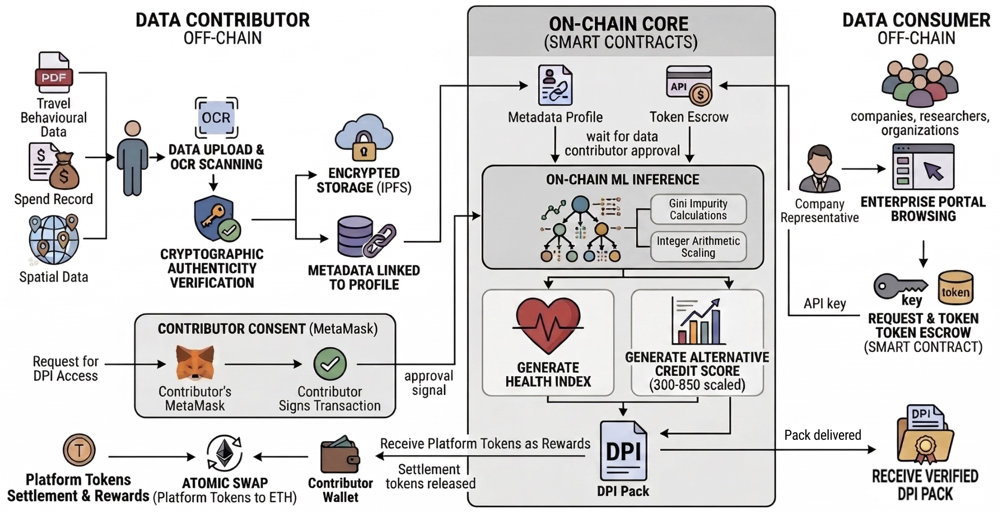
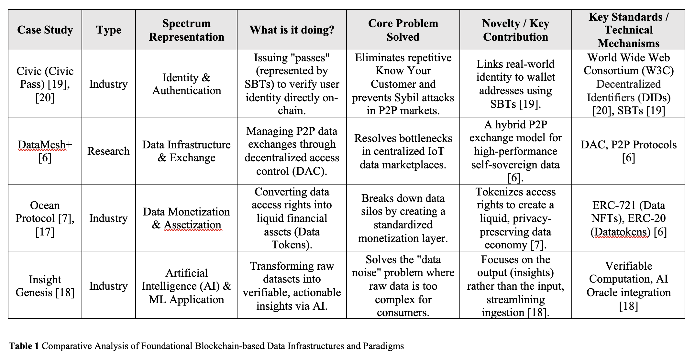
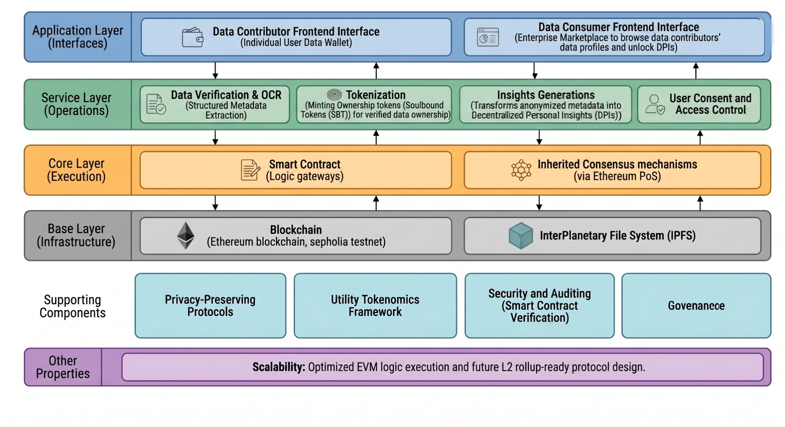
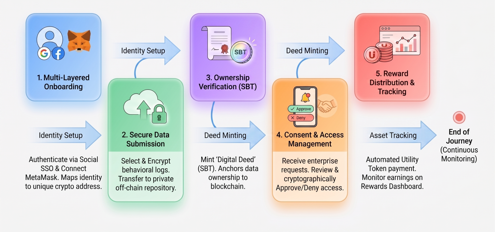
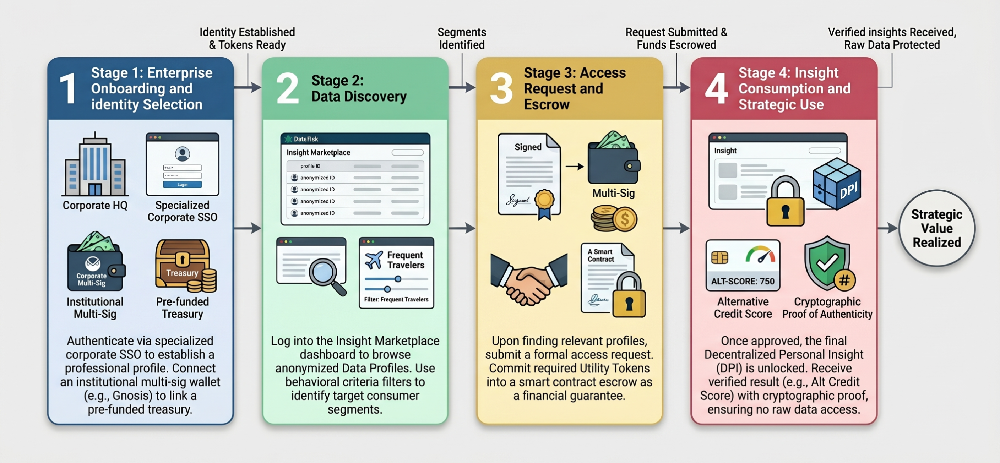
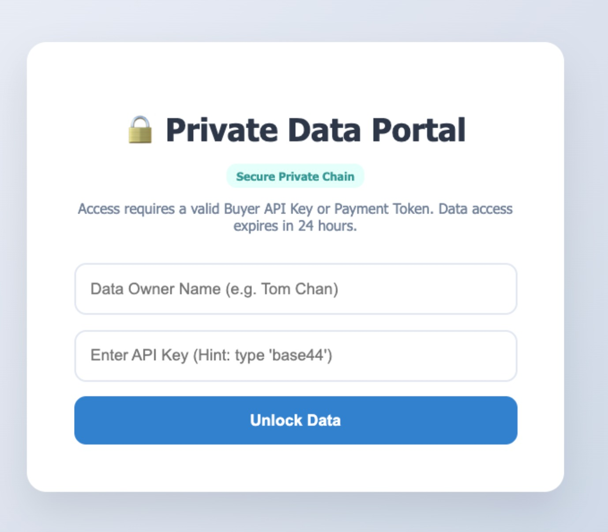
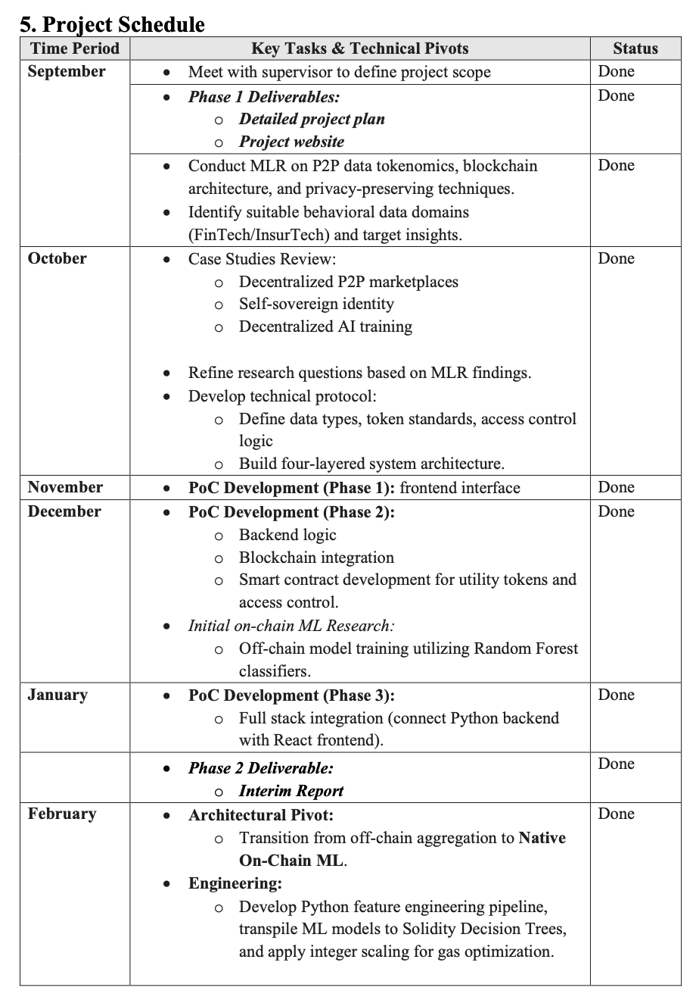
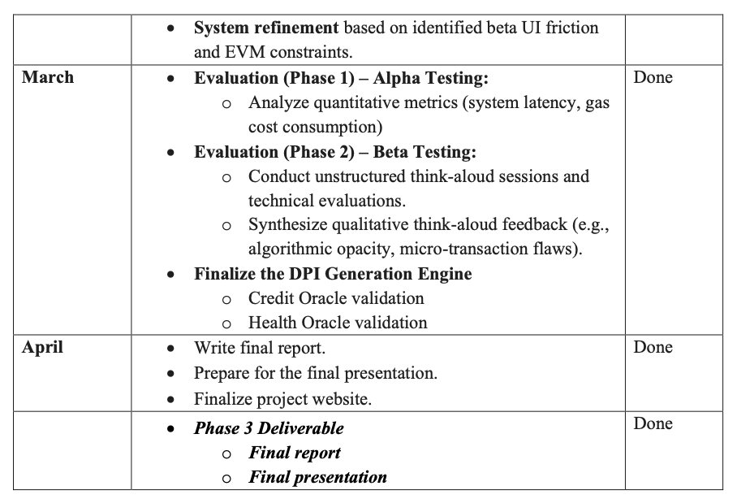
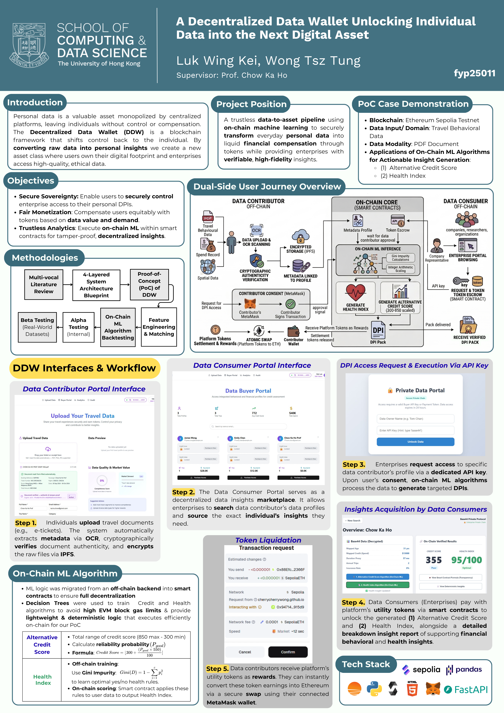

DataTrek is a Decentralized Data Wallet (DDW) empowering individuals to own, govern, and monetize behavioral data without sacrificing privacy.


Visualizing the Web Application operational flow.



Choosing a Decision Tree for our on-chain engine was a strategic pivot driven by the unique constraints of the blockchain environment. While ensemble models like Random Forests are powerful off-chain, they are computationally "heavy" and often exceed Ethereum's gas and contract size limits. By transitioning to a lightweight, deterministic Decision Tree, we achieved a high-performance "White Box" architecture.
This approach ensures that complex risk assessments—like our Credit and Health Oracles—can execute natively on-chain with minimal gas fees and zero aggregation latency. The result is a fully transparent, verifiable model where the logic is hardcoded into the smart contract, providing enterprise-grade reliability without compromising decentralized principles.
The ML engine processes engineered features through transpiled smart contracts to generate two distinct, verifiable Decentralised Personal Insights (DPIs).
3-Level Decision Tree (Max 8 terminal leaves)
2-Level Piecewise Function (Max 4 terminal leaves)
The custom API connects DataTrek to external financial systems, enabling seamless enterprise integration.
A streamlined portal is used to start inquiries via a contributor's unique API key, triggering real-time asynchronous API calls.

🔒Data Consumer's API Gateway Interface for Secure Insights Retrieval for Enterprises



🗺️UID: 3036065408
BASc(FinTech)
UID: 3033104368
BASc(FinTech)
Department of Computer Science